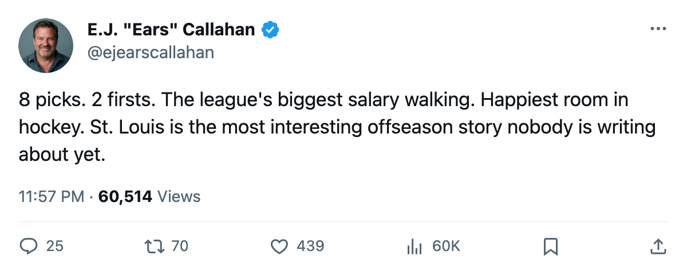
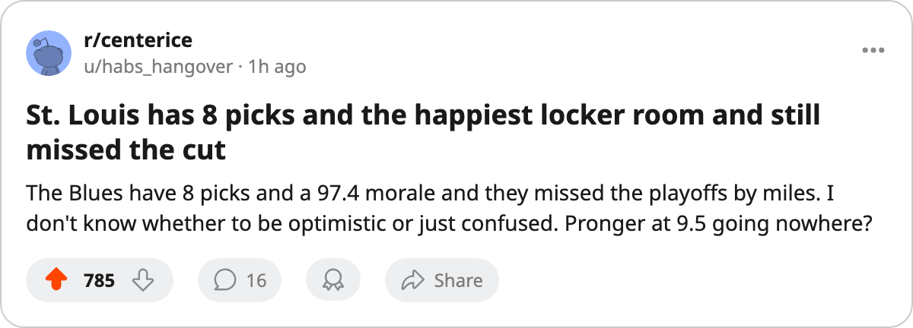

Pick Stockpilers: STL Holds 8 Picks, 2 Firsts, and a $9.50M Blue-Liner About to Walk
The Blues carry 3 of the league's 30 highest-rated expirings, the most draft capital in hockey, and the happiest locker room at 97.4.
 E.J. "Ears" CallahanInsider · The Hot Stove
E.J. "Ears" CallahanInsider · The Hot Stove

STL posture on Pronger re-signing

 St. Louis Blues holds more draft picks than any other club in the league. 8 selections across 5 rounds, 2 of them firsts. The Blues also carry the highest single salary on a man whose deal expires this summer.
St. Louis Blues holds more draft picks than any other club in the league. 8 selections across 5 rounds, 2 of them firsts. The Blues also carry the highest single salary on a man whose deal expires this summer.  Chris Pronger86 makes $9.50M, sits at 86 in the Book, and plays with a Morale Scale of 100.
Chris Pronger86 makes $9.50M, sits at 86 in the Book, and plays with a Morale Scale of 100.
Three things the desk keeps seeing on the contract-year board.
First: STL has 3 players in the Bureau's top 30 by overall among expirings.  Chris Osgood85 at 85 and $3.80M, and
Chris Osgood85 at 85 and $3.80M, and  Brent Johnson85 at 85 and $0.60M. No other club carries 3 names on that board. The room sits at 97.4 on the Morale Scale, highest in the league, on a 26-35-8 record.
Brent Johnson85 at 85 and $0.60M. No other club carries 3 names on that board. The room sits at 97.4 on the Morale Scale, highest in the league, on a 26-35-8 record.
Second: the payroll. STL spends $57.44M for 86 points, a cost-per-point of $0.67M. The 8th West seed held 93. Pronger's $9.50M is the largest single contract on a roster that finished 26 games under .500.
Third: the pick structure. STL owns its own first, LA's first,  Calgary Flames's 2nd, and
Calgary Flames's 2nd, and  Vancouver Canucks's 4th. Eight picks in 5 rounds, tied with
Vancouver Canucks's 4th. Eight picks in 5 rounds, tied with  Detroit Red Wings at the top. Detroit carries $80.89M and made the postseason. STL carries $57.44M and stayed home.
Detroit Red Wings at the top. Detroit carries $80.89M and made the postseason. STL carries $57.44M and stayed home.
Three paths and a posture
A club with the most draft capital, the happiest room, and the biggest expiring salary has three moves in the summer. Re-sign Pronger and the payroll jumps toward a contender number while the picks stay parked. Trade him before the draft and a 9th or 10th pick comes in. Let him walk in July and the space plus the picks plus the morale means a clean rebuild year.
A man who would know told this desk the front office has "no urgency" on the blue-liner's deal. "We've got picks, we've got space, he's got a year left. The math is simple." That's posture, not a trade filing. The desk rates it one flame.
Pronger played all 82 games and posted 43 points. He is the only player in the league's top 10 by salary who carried a full schedule this season. The body is not the question, the deal is.
| Player | Pos | Age | Salary | Overall | GP | Points | Morale |
|---|---|---|---|---|---|---|---|
| [[player:801\|Chris Pronger]] | D | 30 | $9.50M | 86 | 82 | 43 | 100 |
| [[player:748\|Chris Osgood]] | G | 32 | $3.80M | 85 | 24 | — | 86 |
| [[player:442\|Brent Johnson]] | G | 28 | $0.60M | 85 | 62 | — | 100 |
The rookie draft is 39 days away. Free agency closes 89 days from today. The desk will score this one after July.

